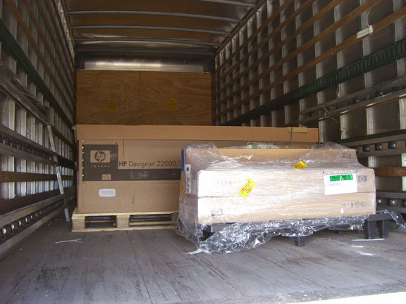
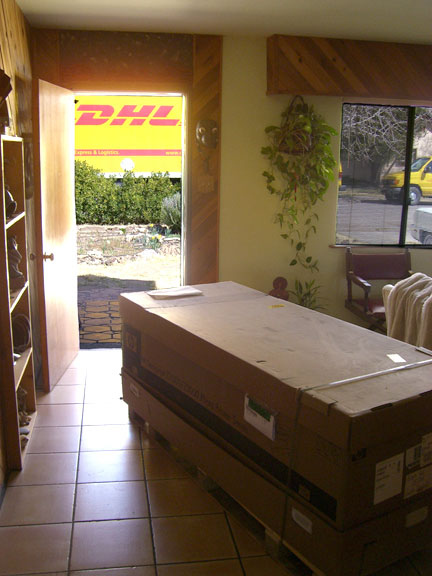
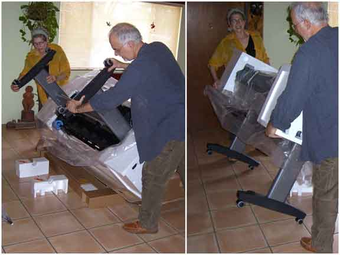
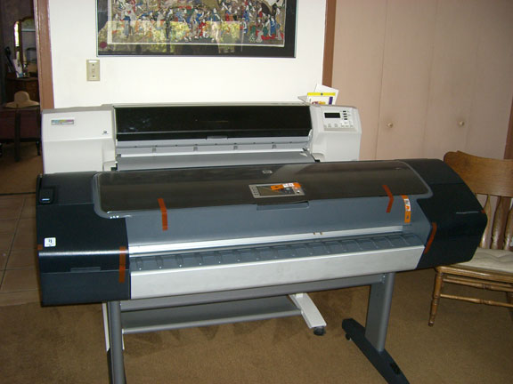
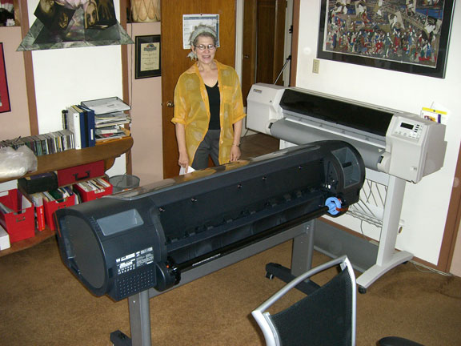

                                                        
<html>
<head>
<title>MOCA: the Museum of Computer Art JD Jarvis Journal</title>
<meta name="keywords"
content="computer art, digital art, moca.virtual.museum, moca, moca museum, art museum, virtual art museum, virtual art, art exhibit, art gallery, fractals, animations, raytraced art, rendered art, 3d art, computer drawn art, flash art, web art, new media, virtual museum, web museum, donnie, donnie contest">
<meta name="description" content="digital art museum,  works by distinguished computer and digital artists">


<style="text/css">
          <!--a{text-decoration:none}-->
</style>

<style type="text/css">

a:link             { color: 654302; text-decoration: none }
a:active         { color: 654302; text-decoration: none }
a:visited        { color: 654302; text-decoration: none }
a:hover         { color: 654302;  text-decoration: underline }

a.microsoft:link             { color: 654302; text-decoration: none }
a.microsoft:active         { color: 654302; text-decoration: none }
a.microsoft:visited        { color: 654302; text-decoration: none }
a.microsoft:hover         { color: 654302; text-decoration: underline }
        
</style>


<script language="JavaScript">
<!--
function MM_preloadImages() { //v3.0
  var d=document; if(d.images){ if(!d.MM_p) d.MM_p=new Array();
    var i,j=d.MM_p.length,a=MM_preloadImages.arguments; for(i=0; i<a.length; i++)
    if (a[i].indexOf("#")!=0){ d.MM_p[j]=new Image; d.MM_p[j++].src=a[i];}}
}

function MM_swapImgRestore() { //v3.0
  var i,x,a=document.MM_sr; for(i=0;a&&i<a.length&&(x=a[i])&&x.oSrc;i++) x.src=x.oSrc;
}

function MM_findObj(n, d) { //v4.0
  var p,i,x;  if(!d) d=document; if((p=n.indexOf("?"))>0&&parent.frames.length) {
    d=parent.frames[n.substring(p+1)].document; n=n.substring(0,p);}
  if(!(x=d[n])&&d.all) x=d.all[n]; for (i=0;!x&&i<d.forms.length;i++) x=d.forms[i][n];
  for(i=0;!x&&d.layers&&i<d.layers.length;i++) x=MM_findObj(n,d.layers[i].document);
  if(!x && document.getElementById) x=document.getElementById(n); return x;
}

function MM_swapImage() { //v3.0
  var i,j=0,x,a=MM_swapImage.arguments; document.MM_sr=new Array; for(i=0;i<(a.length-2);i+=3)
   if ((x=MM_findObj(a[i]))!=null){document.MM_sr[j++]=x; if(!x.oSrc) x.oSrc=x.src; x.src=a[i+2];}
}
//-->
</script>

</head>

<body bgcolor="e8e5dc" text="black" link="7d4900" vlink="7d4900" alink="7d4900">


<a name="comment"></a>

<center>

<a href="../index.html"> 
</a><p>


 <b>A Digital Artist's Journal</b><br>
in three parts<br>
<b>Part I</b><p>

<font size=-1><b>From the Box Up</b><br>
Life with a new printer<p>

<b>by JD Jarvis</b><p>

</center>

<blockquote>
  <blockquote>
<blockquote>
  <blockquote>

<b>Back Story</b><br>	
Our artistic lives can be traced back through the studios my wife and I have occupied over the years. For Myriam that means a cubicle in the basement of the School of Visual Arts, building 209, on 21st Street and later, while working on her Hunter College post-grad work, a sculpture studio established in an apartment in the Bronx along with a husband and three kids. On the other hand, my understanding of "studio" was influenced by my undergrad work in TV Production and although it seemed I was living in the TV studio on the Edwardsville campus of Southern Illinois University it was not officially my living quarters. Not until my post-grad work in "Video and Mixed Media" did I establish a couple of painting studios, complete with air brushing enclosures, in the basements of the mid-western homes I rented. Part sanctuary, part laboratory, these spaces were furnished with what could be spared and stocked with what could be afforded at the time. And so, as many before us, we made the commitment of time, fortune and personal space to live "the life artistic."<p>

Several decades later, Myriam and I find ourselves together, setting up a very different kind of studio in our home in Las Cruces, New Mexico. By 1994, this was truly an "Electronic Studio." Not one of those down-sized TV studio/music labs; the patch-cord-wonders that in the 70's had served to define what an "Electronic Studio" of the future might be. The difference by 1994 was that  "digital" had taken over the electronic driver's seat. "Electronic Arts" had become more than analog TV and sound. Acceptable graphic performance had become affordable. It became possible for us to re-visit painting and printmaking in a new, partially virtual, environment. And this new digital electronic studio seemed much less intrusive than past studios; it was almost integrated into our daily lives. <p>

As the century continued to turn, first one computer then another, Wacom tablets, a scanner and a local Ethernet network filled one spare bedroom of our two bedroom home. Then, in 1997, after about one year of testing and shopping around, a 36-inch wide Hewlett-Packard 2500CP DesignJet inkjet printer was brought into the mix. As our primary output for art and as a revenue stream by which we support our art habit this printer allowed us to become Dunking Bird Productions and an official cottage industry sprang up along the information highway.<p>

Ten years later, after co-authoring a book about digital art for Thomson Course Technology and a year of consulting for Hewlett-Packard's "Creatives" Advisory Council, we are going to receive for purposes of testing and review a new 44-inch wide, twelve-ink, Z3100 DesignJet. We are excited about this not because our old 2500 has worn out, but precisely because it hasn't. After a decade of regular use the DesignJet 2500 has given me no actionable excuse to replace it. It just won't quit! <p>

And during that nearly unprecedented length of service there have been so many improvements in digital printing. We have seen Epson promote itself to the forefront of digital art printing. We had an Epson 3000 for a good amount of time before it expired and just like everyone else, our mouths watered over the on-going developments: new art papers, wider color gamut, finer and finer d.p.i. We learned many tricks for keeping our prints and our print clients in top form, but change was obvious. <p>

2/17/2007. So, today, we wait. We wait for the arrival of a huge box containing a product that Hewlett-Packard bets will set the pace for the future of digital art printing. Of course, big design firms and pre-press houses and large volume print providers, who formulate the normal corporate clientele for HP, will be courted to buy this device. But this time, HP is going all-out to attract the exploding numbers of digital photographers. Wherever there is a major photo exhibit/event/festival, HP is there, sponsoring, contracting and courting digital photographers. In addition, a small team of digital artists has convinced Hewlett-Packard that a large format printer is now an important part of a substantial number of individual digital artist's studios. That those who create prints of their original digital art have unique approaches to the artwork and needs that set them apart, even from digital photographers. And that other digital artists might gain from a personal journal about the experience of integrating this new printer into an electronic studio and its digital workflow. I don't know what Myriam and I are going to do with the old 2500CP. I almost hate to unplug it.<p>

<table><tr><td align=left><font face=tahoma><br>It's on the truck!</font>
</td>
</tr>
</table><p>

<b>Inside Out</b><br>
3/8/2007. The box containing the HP Z3100 arrived today. At 246 pounds sitting in the back of a 25-foot truck it appears only slightly larger and just nearly as forbidding as Dracula's coffin.  The "most-valuable-player" of the day was undoubtedly DHL. Without realizing that the delivery was going to a private residence rather than the usual warehouse or office, the driver had decided to leave his pallet dolly back at the loading dock. But after a quick call back to headquarters, two more drivers were dispatched from the area to lend a helping hand. With nominal moans and groans the three were able to easily deposit The Box inside our front door. There is a lot to be said for dealing with the "new kid" on the worldwide delivery scene. DHL certainly went the extra distance with this one, for which we are deeply appreciative. <p>

Excitement ran high, of course. The Box is impressive inside and out. It could easily contain a new sofa or that A-bomb that Goldfinger intended for Fort Knox had not James Bond been there to foil his evil plan. Speaking of which, it was a bit curious that what had held the shipment up at the US Customs Office for about five days was not the size or address of origin of this impressive box, but rather the composition of the fibers used in a sample roll of canvas included with the printer. "Cotton" was the magic word, the missing word that freed this shipment from that bit of international intrigue. Now, all we need is some uninterrupted time to get what is inside out.<p>

<table><tr><td align=left><br><font face=tahoma>Delivered!</font>
</td>
</tr>
</table><p>

<b>Up and Running</b><br>
3/10/2007. Between the delivery date and today, repeated rummaging inside The Box revealed that the "Quick Start Guide" was in Spanish, which is no problem for Myriam but a real drawback for me. What had me more worried was the absence of an American style AC cord. This, of course, would not have occurred if I had received the printer from an American reseller, but having come directly from Barcelona, where the Z3100 was designed and tested, the Southern European AC cord was no surprise. A quick download of the manual in English from the HP website and switching out the AC cord from our HP 2500CP to the Z3100 solved all these worries.<p>

Myriam and I have a great appreciation for good design, even for the way things are packaged. And it was good design that won-the-day as we moved the Z3100 from the box to its current place in our studio. With detailed instructions, comprehensive illustrations and well-planned layout, the 167-pound printer literally rolled out of the box. (The Z3100 comes upside down in its box. Attach the legs and roll it out. It is that simple to assemble.) The two of us had no problems standing it on its feet and with borrowed AC cord and ethernet cable in place the Z3100 began taking care of itself. It took us about 90 minutes to set the printer up, pausing to take some documentary photos and admire the parts as they came out of The Box. Having done it once, I bet we could do it again in about 30 or 40 minutes.<p>

<table><tr><td align=left><br><font face=tahoma>JD and Myriam: Upright it is!</font>
</td>
</tr>
</table><p>

The 44 inch Z3100 has only a slightly larger "footprint" than the 36 inch 2500CP. Even with the extra paper width and three times as many ink cartridges, the Z3100 is just 8 inches wider than our old printer and stands about 8 inches lower than earlier models. (Not that much bigger than an older 36 inch printer.) This relative compactness means a lot when it came to fitting it into our existing space and as you can see we have opted for a perpendicular position to allow access to the rear of the printer. Due to the location of the supply reel this ability to easily maneuver behind the printer is important. Of course the printer can be easily moved back and forth from the wall to accommodate this and we will probably adopt this practice once the 2500 has been permanently retired.  But the studio is full. <p>

We have two Macs in our studio, a G5 and a G4, both hooked to an ethernet hub along with two printers and DSL. So, it took about 30 more minutes to load the driver software from the DVD Start-Up Kit and establish links to the Z3100 for both computers. Here again, if you can read and follow directions, HP has provided an impressive set of documentation, instruction and designed-in ease of operation. In very little time the Z3100 had gone through its diagnostics and initial set up. It walked us through the installation of print heads and ink cartridges, offered encouraging beeps and clicks as it printed out its calibration pages and then told us it was "ready."  On the left are housed the ink cartridges containing  gloss enhancer, gray, blue, green, magenta, and yellow. On the right side of the printer are the light magenta, light cyan, photo glossy black, light gray, matte black and red cartridges. Extra wide color gamut, no "bronzing" and the option to print either photo or matte black on the fly are real advantages. Having no reason to doubt it, we began feeding it files to print.<p>

<table><tr><td align=left><br><font face=tahoma>Very impressive!</font>
</td>
</tr>
</table><p>

HP had included an impressive amount of glossy and semi-glossy photo paper in the form of their approved and tested "Instant Dry" satin and glossy photo papers. These are nice thick stock photo papers with impressive stability ratings (See http://www.wilhelm-research.com/hp/Z3100.html) and the hand of professional grade photo paper. Usually we do not print our images on photo papers, preferring instead to use materials that have the feel of more traditional smooth matte surface or textured fine art papers. In addition, as artists, we see the value in choice and experimentation and have employed paper, canvas, Tyvek, banner and self-adhesive vinyl to create artwork. We will want to experiment with all these materials and more, but for the meantime "when in Rome."<p>

After all it is called the HP Designjet Z3100 Photo right on its front panel and it really prints fine quality photographs. We ran some of our art through, as well as some family photos and the results are impressive. Rich blacks and vibrant accurate colors, which, by the way, stood up to a "wet smeary thumbprint" test. Also, noted for their absence were the pizza-wheel tracks that one often sees on highly inked glossy materials. I can't say that a pizza wheel array has been eliminated, but it has been re-designed or re-positioned so that I have seen no tracks on even the glossiest of surfaces. Further testing will reveal if this remains true on other papers. Also, I learned on our test flights that some of the features I had grown accustomed to on the 2500 are not readily available to me on this Z3100. These include automatic cueing and nesting of multiple files spooled separately to the printer and there is no ability to retrieve and re-print a previous job from the printer's copious 40GB hard-drive without sending the image through the RIP process again. These features are, however, part of the upgrade to the HP-GL/2 driver. Considering the other advanced features of this printer, I am a bit disappointed that these capabilities are not in the basic package.<p>

<table<tr><td align=left><br><font face=tahoma>Myriam in charge!</font>
</td>
</tr>
</table><p>

The speed with which the printer (via ether-net) outputs a file makes up, in part, for the missing features. And, I guess I could do with a bit more hands-on attention and control of my margins and paper waste by setting this up in Photoshop first. To speed this up I have a generic 42" wide file, preset with margins, etc. that I gang print onto before sending them to the printer. In the long run, I'll probably want to upgrade to the Post Script driver. But, for now the Z3100 seems ready to print for years.<p>

Having printed for so long on a 600 dpi, four-ink system, you might wonder if we were blown away by the 12,000 dpi, 12 ink output. Well, I have been doing that sort of comparison for a long time, so let me say what really impresses me is how well our images printed on the trusty 2500 hold up in comparison. With only one day of printing on the Z3100 under my belt and a lot to learn, I have come to believe that, in terms of image sharpness, detail and color gamut, there has been some sort of technical plateau reached with this generation of inkjet printer. At normal viewing distances prints from either era of printers are acceptable. That is, the print does not stand in the way of conveying the artwork. As you approach a print made on the Z3100 the purity of the art object holds up. Under close examination the Z3100 image seems more immediate, more there. This is partly due to aspects of the material upon which the print is made that can be seen at this viewing distance and the sharpness of the variable dot size printing. Then, of course, under a magnifying glass, the improved technology is most evident.<p>

What is important here is that the digital art print assumes its own object-hood while a digital photograph remains a picture of something else. That is one big reason why Myriam and I do not use a lot of glossy paper, which immediately says to the viewer 'photograph.' Unless the artwork can benefit from having the photographic aura about it, we prefer to use other materials that help convey a different context for the imagery. On the other end of what we do, we have many clients who come to us for photo re-touching, enlargement and printing that will be thrilled by the feel of these papers and the over-all quality of the image. <p>

3/11/2007. Having excellent results with our first prints, I am satisfied that the Z3100 could run in our studio as it is right now for a good long time. But I am enough of a techno-geek to want to have everything in order and the latest drivers, firmware and paper profiles in place. So, as advised in the start-up guide, I decided to download the latest firmware and color profiles and check that everything was updated. Fortunately, the designers of the Z3100 realize what a daunting task it is to be dropped off at the "Home Page" and left to follow the looming corridors of products, services, support and news offered by organizations the size of Hewlett-Packard. For those interested in cutting to the chase, the "HP Printer Utility" (Mac OS) or "HP Easy Printer Care" (Windows) is placed directly on the your computer's system when the driver is installed. It has a lot to offer, which will be addressed in subsequent issues of this Journal. For now, I took about two hours to tune-up the firmware, check for the latest driver and update paper profiles on our computers. The HP Printer Utility is the portal to all sorts of information and tools for tracking costs, creating custom profiles, setting up networks and numerous levels of web-delivered HP diagnostics and support.  I whiled away most of this time, as the large files downloaded, to read the pdf of the operating manual. This manual is very clear and well documented; again a commendable example of the overall good design and forethought that has gone into the Z3100 printer.<p>

In the literature provided with the printer and on various websites it becomes apparent that HP would like to position the printer as one part of a larger and expanding system of support and distribution and are working hard to perfect that vision. One sentence from the Quick Start Guide caught my eye. In the discussion of color management it reads, "After color calibration, you can expect to get identical prints from any two different printers situated in different geographical locations."  What are the implications of this to me, a digital artist?  How much of a role is HP willing to play in helping digital artists promote, present and deliver work to these widespread geographical locations?<p>

Myriam and I will be asking ourselves these questions and more as we explore the variety of materials upon which we can print our artwork. Over the next weeks I want to do some well-controlled comparisons of earlier editions and materials. But most of all I am looking forward to seeing what some of the new features offered by the Z3100 can do for me. Highest among these is the 'Embedded Spectrophotometer' which promises to add more flexibility by creating on-board custom color profiles for a wide range of materials. I am interested to see the self-maintenance features at work. We will explore, in depth, the results of the extended color gamut. I intend to sheet feed a lot of different materials into the printer and explore the functions of the "HP Printer Utility" and "Color Center."<p>

<a href="jd_hp2.html">
<strong>Go to Part II of this journal<br></strong></a></p>

In the meantime, if you want to read more about the Z3100  and digital color printing:<p>
<a href="http://www.luminous-landscape.com">Luminous-landscape</a><br>
Review by Michael Reichmann<p>
<a href="http://web.mac.com/davidsaffir/iWeb/site/Hidden_Costs_Of_Inkjet_Printing.html">Hidden Costs of Inkjet Printing</a><br>
Article by David Saffir<p>

JD Jarvis<br>
Las Cruces, NM<br>
March, 2007<p>


<a href="http://www.dunkingbirdproductions.com">
<strong>JD Jarvis website<br></strong></a></p>


 </blockquote></blockquote></blockquote></blockquote></font>

<center>
<a href="#comment"> <b><font size=1>top of page</font></b></a>  <p>

<a href="../index.html"> 
</a>
</center>

<!-- Google tag (gtag.js) -->
<script async src="https://www.googletagmanager.com/gtag/js?id=G-97W5QY3G15"></script>
<script>
  window.dataLayer = window.dataLayer || [];
  function gtag(){dataLayer.push(arguments);}
  gtag('js', new Date());

  gtag('config', 'G-97W5QY3G15');
</script>
</body>
</html>

 